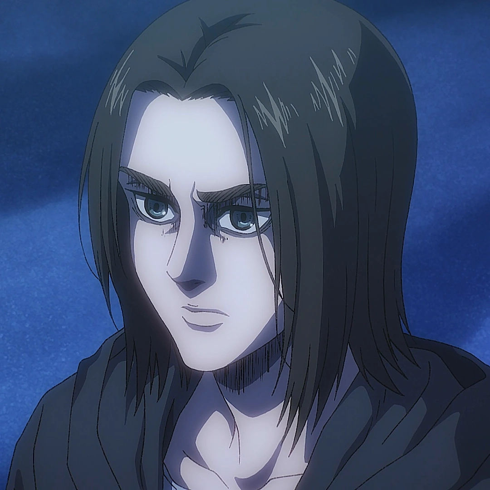

Eren Jeager
Eren Jeager es el protagonista principal de la serie. Es el único hijo de Grisha y Carla Jaeger. A su vez, es el medio hermano menor de Zeke Jaeger, el hermano adoptivo de Mikasa Ackerman y un Titán Cambiante, siendo el último portador del Titán de Ataque, el Titán Fundador y el Titán Martillo de Guerra

Historia de Eren
La humanidad ha vivido dentro de las murallas por más de 100 años, pero por alguna razón, un día, las murallas son destruidas y los Titanes logran entrar, por lo que nadie está a salvo ahora, y entonces es cuando nuestro protagonista es testigo de cómo su madre es devorada por los Titanes, jurando vengarse mientras huye del lugar.
¿Heroe o Villano?
En la profundidad, Eren todavía seguía siendo el mismo, aunque a finales de la serie, parecía que se estaba volviendo alguien más, todo lo que hizo fue para proteger el futuro de sus amigos, especialmente a Mikasa y a Armin, quienes sin saber esto, tuvieron que enfrentársele y detener “el retumbar” provocado por Eren, con el cual planeaba destruir la humanidad.